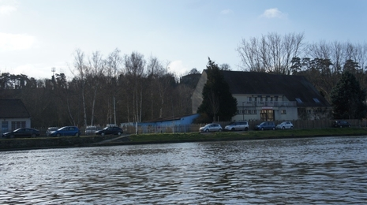

Etoile Nautique de L'Oise
club d'aviron de Creil

Actualités
En raisons des nouvelles mesures sanitaires, la pratique de l'aviron doit se faire exclusivement en extérieur, de ce fait, les vestiaires, la salle de musculation ainsi que le club house sont fermés.
La pratique reste possible uniquement en bateau individuel, la pratique d'ergomètre reste possible mais doit également se faire en plein air.
- les sortis en bateaux se feront exclusivement en bateau individuel.
- L'accès au club house et a la salle de musculation sont interdit. (sauf dérogation gouvernementale ou fédérale).
- La pratique de l'ergomètre doit se faire uniquement en plein air.
Résultats aux championnats
Championne de France PR2 Femme sur 500m :
Aude RollandVice championne de france en PR2 Femme sur 2000m :
Aude RollandVice champion de france en 80+ Homme sur 2000m :
Pierre Richier
Championnat de France Indoor
Championnat du monde Indoor
- 4ème place mondiale PR2 Femme sur 500m :
Aude Rolland - 5ème place mondiale PR2 Femme sur 2000m :
Aude Rolland -
Vice championne de france en PR2 Femme sur 500m :
Aude rolland -
Médaille de Bronze PR2 Femme sur 2000m :
Aude Rolland -
Record du monde PR2 Femme sur 2000m :
Aude Rolland Record du monde PR2 Femme sur 500m :
Aude Rolland
Championnat de France Indoor
Record du Monde d'Aviron Indoor
Championne de France PR2 Femme sur 500m :
Aude RollandVice championne de france en PR2 Femme sur 500m :
Viviane LeroyVice championne de france en PR2 Femme sur 2000m :
Aude RollandMédaille de Bronze PR2 Femme sur 2000m :
Vivane LeroyVice championne de france en PR2 Femme :
Aude RollandChampionne de France PR2 Femme :
Aude Rolland
Championnat de France Indoor
Championnat de France Bateaux Courts
Championnat de France Sprint
Médaille de Bronze categorie xxxx :
Marc GauchetMédaille de Bronze PR2 Femme :
Viviane LeroyMédaille de Bronze PR2 Femme :
Viviane LeroyCatégorie 40-49 HTC en 6h:58:43.1 :
Frank Vignerol
Championnat de France Indoor
Championnat de France Bateaux Courts
Championnat de France sprint
Record de France des 100kms
Championne de France en 1X SF:
Edwige AlfredMédaille de Bronze PR2 Femme :
Viviane Leroy- 6ème place PR2 Femme: Viviane Leroy
- 9ème place PR2 Homme: Denis Menage
- 11ème place PR2 Homme: Ludovic Ledent
Médaille de Bronze PR2 Femme :
Viviane LeroyMédaille de Bronze en solo:
Edwige Alfred- 8ème en 2X SH :
Christos Dimopoulos, Cedric Lemoine -
catégorie 40-49 HTC en 6j-5h-16m-54s :
Frank Vignerol
Championnat de France mer
Championnat de France Indoor
Championnat d'Europe Indoor
Championnat de France Sprint
Championnat du monde des clubs
Record de France des 1000kms
Championne de France 1X SF:
Edwige AlfredVice championne de france en PR2 Femme :
Viviane LeroyVice championne de france en PR1 Femme :
Virginie PicardVice championne de france en PR2 Femme :
Viviane LeroyVice championne de france en PR2 Femme :
Viviane LeroyMédaille de Bronze 1X SF:
Edwige Alfred-
catégorie 40-49 HTC en 6j-18h-46m-47s :
Frank Vignerol
Championnat de France mer
Championnat de France Indoor
Championnat de France Sprint
Championnat de France Bateaux Courts
Chamiponnat du monde des clubs
Record de France des 1000kms
Médaille d"Argent PR2 Femme :
Viviane LeroyVice championne de france en PR2 Femme :
Viviane LeroyChampionne de France en 1X SF:
Edwige Alfred-
Catégorie 40-49 HTC :
Frank Vignerol
Championnat de France Indoor
Championnat de France Bateaux Courts
Championnat de France mer
Record de France des 100kms
Vice championne de france en PR2 Femme :
Vivane LeroyMédaille de Bronze PR2 Femme :
Viviane Leroy-
Catégorie 30/39 : Edwige Alfred, Raphaël Ruban Vice championne de france en 1X SF:
Edwige Alfred1ère place en 1X SF 28kms :Edwige Alfred
Championnat de France Indoor
Championnat de France bateaux courts
Record du monde des 100kms indoor
Championnat du monde des clubs
Traversée Jersey-Carteray
Championne de France en 1X SF, et detentrice du record du bassin :
Edwige AlfredVice championne de France en 1X PR2 Femme :
Viviane LeroyMédaille de Bronze PR2 Femme :
Viviane Leroy- 5ème place mondiale en 1X SF :
Edwige Alfred
Criterium International Thonon
Championnat de France Indoor
Championnat de France bateaux Courts
Championnat du monde des clubs
Championne de France en 2X SF-PL
Edwige Alfred, Clemence Gourdin-
Championne de France en 1X SF
Edwige Alfred
Championnat de France Élite
Championnat de France Sprint
-
Championne de France en 2X SF-PL :
Edwige Alfred, Clemence Gourdin -
Championne de France en 1X SF :
Edwige Alfred -
Championne de France en 2X SF :
Edwige Alfred, Clemence Gourdin -
Championne du Monde en 2X SF :
Edwige Alfred, Clemence Gourdin
Championnat de France Élite
Championnat de France Sprint
Championnat de France Mer
Championnat du monde des clubs
-
Championne de France en 1X SF :
Edwige Alfred
Championnat de France Sprint
-
Championne de France en 1X SF :
Edwige Alfred Champion de France en 1X PR2 H :
Stéphane TardieuMédaille de Bronze en 2X PR2 M :
Stéphane Tardieu, Catherine Martin
Championnat de France sprint
Championnat de France bateaux Courts
Championnat du monde en pologne
PR1 : para-aviron (para-rowing) bras et épaules.
PR2 : para-aviron (para-rowing) tronc et bras.
PR3 : para-aviron (para-rowing) jambes, tronc et bras.
J XX : Jeune avec XX l'âge du rameur entre 10 et 14 ans.
J XX : Junior avec XX l'âge du rameur entre 15 et 18 ans.
U23 : Senior, avec l'âge du rameur compris entre 18 et 23 ans.
S : Senior, rameurs aillant 23 ans et plus.
PL : poids Légers
TC : toutes Catégories
Historique
Les Origines
La mode de l’aviron nous est venue d’Angleterre où elle servait à occuper la noblesse. Rapidement, nous y avons connu des défis lancés par des membres de clubs très huppés : des courses en skiff sur 6 kilomètres, des courses en huit où l’argent attirera des personnes qui se consacreront à ce sport en déplaçant des foules énormes.
Cette mode gagna la France vers des villes ou des ports qui travaillaient avec l’Angleterre : c’est ainsi que fut créé le premier club au Havre en 1838, le 2ème en 1840, c'était un club picard le "club de la Baie de Somme" à Saint Valéry sur Somme malheureusement démantelé il y a une quarantaine d’années. Progressivement, ce phénomène gagna l’arrière-pays, en témoignent les dates de création de clubs voisins : Amiens (1866), Abbeville (1866), Soissons (1878), Compiègne (1882), Pontoise (1884), Enghien (1885)...
A Creil, nous n’avons pas de pièces officielles mais il apparaît fort probable que la création du club, la Société Nautique de Creil (maillot blanc, étoile rouge) date des années 1880, car nous avons la composition du bureau en 1888 et le compte-rendu de la régate du 10 juin de cette même année dans des skiffs, des yoles à 2 et à 4 et des périssoires assis et debout. Il y avait une foule considérable avec huit clubs picards et parisiens : le Sport Nautique Compiégnois, le Sport Nautique d’Amiens, le Rowing Club de Paris, le Sport Nautique de Vitry Paris, le Cercle Nautique de Meaux, la Société Nautique de la Basse Seine, les Pagayeurs Parisiens et la Société Nautique de Creil.
La Création
Ce fut Ernest Gallé qui créa le club à la mode anglaise, réservé à la gente masculine pour occuper de nombreux loisirs et naviguer entre gens de bonne compagnie, il était impératif d’être présenté par deux parrains membres du club. Issu de la bourgeoisie locale d’origine lorraine, Ernest Gallé était marié à Marie Juillet, fille d’un médecin local (Jules Juillet) qui eut son heure de gloire en soignant une épidémie de choléra à Verneuil-en-Halatte (en 1833) qui lui valut la reconnaissance des élus. Les Creillois ont l’habitude d’entendre ces noms : Musée Gallé-Juillet ou encore la rue Jules-Juillet.
Ernest Gallé affilia son club à l’Union des Sociétés de France qui était composée de vingt-trois clubs sur soixante-huit en France. Nous comptions également deux autres regroupements : l’Union Nautique des Sociétés du Sud-Ouest et la Fédération des Sociétés Nautiques du Nord de la France. Il faut savoir que dans ces associations étaient absents les clubs de Lorraine et d’Alsace sous occupation allemande depuis la guerre de 1870.
Ernest Gallé milita très vite pour le regroupement de ces trois entités ce qui fut chose faite le 30 mars 1890 sous l'appellation de fédération française des sociétés d’aviron. Il milita aussi pour la création de club et c’est ainsi qu’il alla en 1889 organiser une régate de propagande à Pont Sainte Maxence.
Le club depuis le 20ème siècle
Nous n’avons pas retrouvé beaucoup de documents de l’époque. Ernest Gallé décède en 1900. Son fils Auguste Gallé se marie en 1894 avec Berthe Franchemont, fille de minotier et ont un fils Maurice en 1895. Que se passe-t-il le 31 juillet 1906 ? Auguste Gallé fonde l’Etoile de l’Oise et l’inscrit en Préfecture dans le cadre des associations loi 1901. Nous ne pouvons pas imaginer qu’il y ait un différend avec l’ancien club dirigé par son père et qu’il a certainement dirigé lui-même après 1900. Les couleurs changent légèrement puisque le maillot blanc passe à bleu ciel mais on garde l’étoile rouge d’où le nom de l’association. Une hypothèse : peut-être était-ce pour se distinguer des clubs des alentours qui portaient tous dans leur sigle le terme de Société Nautique : Amiens, Compiègne, Soissons, Pontoise, Enghien… Auguste Gallé était à Creil le délégué nautique du Touring Club de France et il demanda à Monsieur Glandaz son ami et Président du Comité Nautique du Touring Club de France de devenir Président d’Honneur de l’Etoile Nautique. Notre président d’honneur crée la Coupe Glandaz en 1907 un critérium national en quatre pour seniors débutants où s’illustreront de nombreux Creillois.
 Peu de documents jusqu’à la première guerre mondiale où les Allemands font une grande avancée menaçant Paris, certains ont aperçu une patrouille de Uhlans près de Luzarches, Senlis est envahie et le Maire Odent fusillé. A Creil, le pont est détruit ainsi que le club avant que les Allemands se retirent sur la Marne après une contre-attaque. Auguste Gallé, officier, est mobilisé à l’arrière en raison de son âge, son fils unique Maurice part au front et est tué le 25 septembre 1916 à Bouchavesnes (Somme).
Nous avons eu une photo de M. Delamarre, membre de l’ENO, en périssoire devant le pont coupé en deux. M. Delamarre deviendra après 1945 le Président du Cyclo Club Creillois. La fin de la guerre marquera à l’ENO une première démocratisation du club, par exemple les adhérents n’étaient plus obligés d’être propriétaires de leurs embarcations. Auguste Gallé meurt en 1928 et son épouse vivra jusqu’en 1956 dans le souvenir de son fils Maurice, l’ile de Creil deviendra l'Ile Saint-Maurice et bien avant sa mort, Mme Gallé fera don de sa maison à la ville de Creil qui deviendra le Musée Gallé-Juillet, une moitié de l’Ile ira à l’Eglise avec le stade Saint Médard lieu d’entraînement de l’équipe de basket. L’Etoile Nautique de l’Oise avant le décès d’Auguste Gallé reçut de ce dernier un terrain le long du mur du château et les membres de l’association construisirent en deux mois un garage de 30 mètres de longueur avec des matériaux fournis par un industriel creillois M. Rivière, ce dernier peu de temps après devenant le président du club. Durant la deuxième guerre mondiale, le club fut à nouveau gravement endommagé, et nous restâmes après la libération un long moment sans président, jusqu’à ce que Robert Dubail contacte un notaire Maître Pierre Dorchies qui acceptera le poste. Il échangera le terrain adossé au jardin du château pour un autre derrière ce jardin sur lequel sera construit le premier club moderne encore debout grâce à des dommages de guerre qu’il nous obtiendra après beaucoup de difficultés administratives (nous connaissons quelques petits jeunes qui aidèrent le dirigeant de l’époque Robert Moreau à creuser les fondations de ce bâtiment vers 1958). Par la suite, le bâtiment et le terrain seront donnés à la ville pour le franc symbolique afin que cette dernière puisse en assurer l’entretien.
Contacts
vous disposez de nombreux moyens pour nous contacter, alors n'hésitez pas !
- mail : enocreil1906@gmail.com
- téléphone : 06 16 75 00 54
- ou directement au club :
Horaires d'ouvertures :
- lundi :
- 9h-12h || 14h-20h
- mardi :
- 9h-12h || 14h-20h
- mercredi :
- 9h-12h || 14h-20h
- jeudi :
- 9h-12h || 14h-20h
- vendredi :
- 9h-12h || 14h-20h
- samedi :
- 9h-12h || 14h-18h
- dimanche :
- 9h-12h